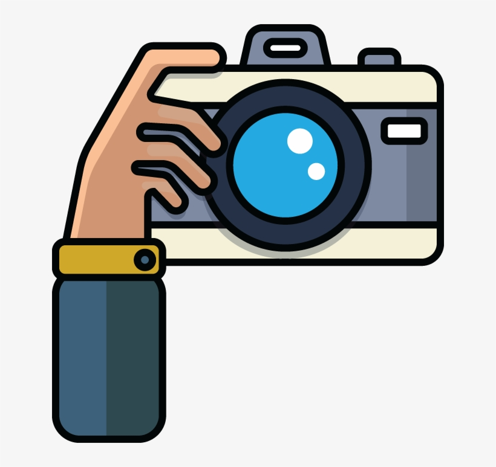

<ion-header>
  <ion-toolbar>
    <ion-buttons slot="start">
      <ion-back-button style="color: white" icon="chevron-back"></ion-back-button>
    </ion-buttons>
    <ion-title style="position: relative; right: 40px;">BEST MOMENTS</ion-title>
          <div style="position: absolute; bottom: 13px; width: 35px; display: flex; right: 100px; text-align: center;">
            <span style="margin-left: 10px; background-color: #ececed; color: #707072; padding: 4px; border-radius: 50%; font-size: 13px; position: relative; bottom: 3px; height: 25px; width: 25px; right: 10px;"> 
              0{{this.BestMoments?.length}} </span>
            </div>
              
        <ion-icon name="caret-down-outline" style="position: absolute; right: 10px; color: white; bottom: 15px;"></ion-icon>

  </ion-toolbar>
</ion-header>

<ion-content>

  <div style="float: right; margin-right: 10px;">
    <div style="background-color: #7070726b; margin-top: 15px; padding: 5px; border-radius: 20px; display: flex; width: 185px;" (click)="gotoAddBestMoments()">
      
      <span style="font-size: 12px; position: relative; top: 2px;">Add Best Moments </span>
    </div>
  </div>

  <div style="padding: 30px; margin-top: 60px; text-align: center;" *ngIf="BestMoments==null">
    <div style="background-color: #c3c3c4; border-radius: 50%;">
      
    </div>
    <h5 style="font-weight: 600; margin-top: 45px; line-height: 30px; letter-spacing: 1px;">No Best / Worst Moment Medias Available !!!</h5>
  </div>

  <div style="padding: 65px 20px 20px 20px;">

    <div *ngFor="let moments of BestMoments, let i = index" style="box-shadow: 1px 1px 5px 1px grey; border-radius: 5px; margin-bottom: 20px;" class="animate__animated animate__fadeIn">
      <div>

        <div style="position: absolute; right: 10px; background: #f1d948; margin-top: 20px; padding: 3px 10px;">
          
          <span style="font-size: 13px; position: relative; bottom: 3px; font-weight: 600; letter-spacing: 1px; margin-left: 5px;"> {{moments.created_at | date}} - {{moments.created_at | date:'shortTime'}} </span>
        </div>

          

        <div style="position: relative; bottom: 31px; background-color: #707072; opacity: 60%; padding: 2px 15px;">
          
          <span slot="start" style="font-size: 13px; font-weight: 600; margin-left: 5px; position: relative; bottom: 2px; color: white;"> {{moments.media_count}}</span>
        </div>

      </div>
  
      <div style="padding: 10px; position: relative; bottom: 25px; height: 70px;">
        <p style="margin-top: 1px; font-weight: 600;"> {{moments.caption}} </p>

         
        <span style="font-size: 14px; position: relative; bottom: 5px; margin-left: 5px; color: #707072; font-weight: 600;"> {{moments.Like_count}} </span>
        
        <span style="font-size: 14px; position: relative; bottom: 5px; margin-left: 5px; color: #707072; font-weight: 600;" (click)="gotoBestMomentComments($event,moments)"> {{moments.comment_count}} </span>

        <div slot="end" style="text-align: end; position: relative; bottom: 5px; float: right;">
          
        </div>
      </div>
    </div>

  </div>

</ion-content>
